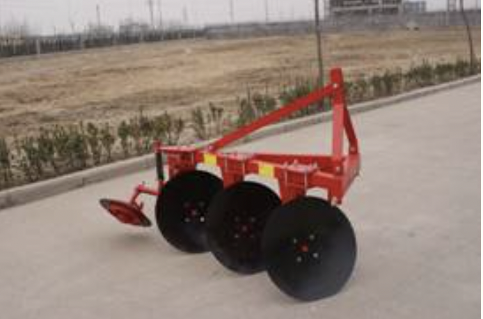
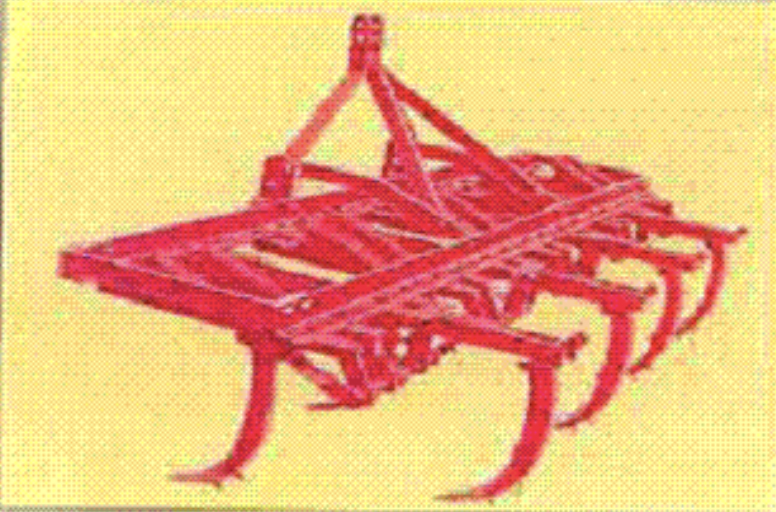
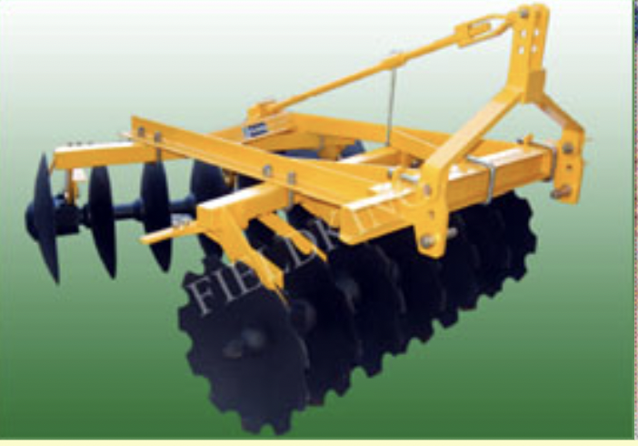
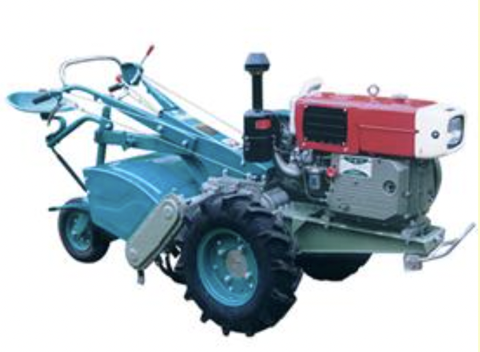
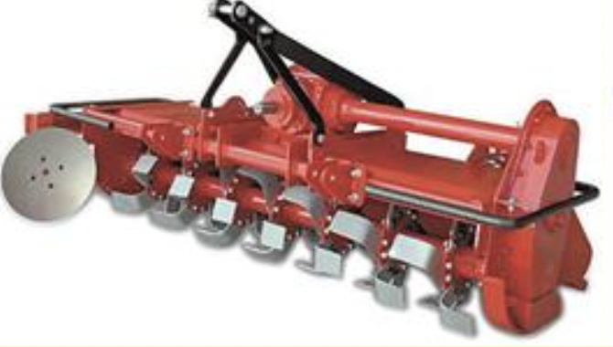
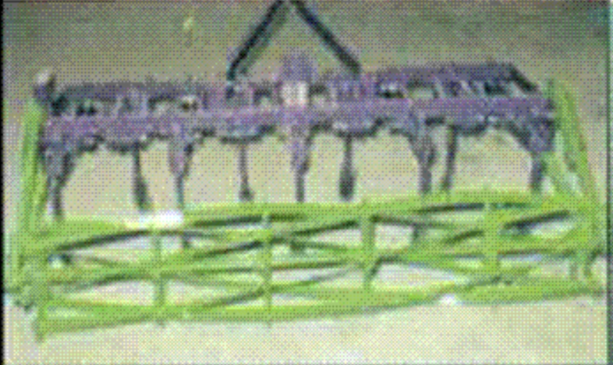
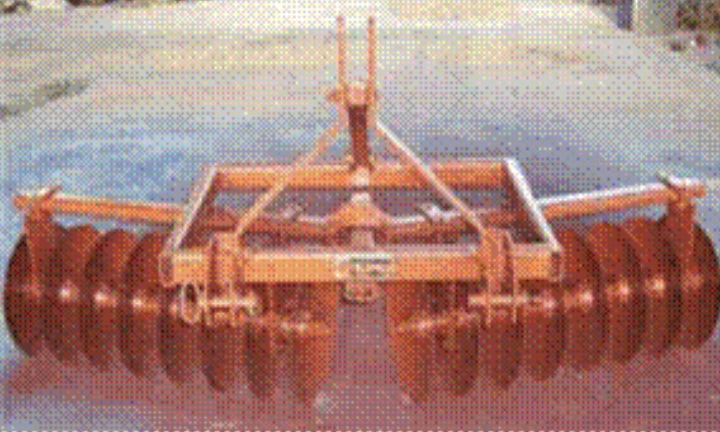

4.0 TILLAGE IMPLEMENTS
- 4.1. M.B Plough
- 4.2 DISC PLOUGH
- 4.3 TYNE TYPE CULTIVATOR
- 4.4. DISC HARROW
- 4.5 Power Tiller Operated Rotary Tiller
- 4.6 Rotavator
- 4.7 Pulverizing Roller
- 4.8 Paddy Harrow/Puddler
4.1 MOULD BOARD PLOUGH

Features
It is a tractor-operated implement and consists of share point, share, mould board, landslide, frog, shank, frame and hitch system. The share point is of bar type and is made from high carbon steel or low alloy steel. The share is also made from high carbon steel or low alloy steel. Both are hardened and tempered to suitable hardness (about 45 HRC). The working of the plough is controlled by hydraulic system and three-point linkage. Its bar-point makes it suitable to break hardpan of the soil.
Specifications:
| Length( mm) | : 1778 |
| Width (mm) | : 889 |
| Height(mm) | : 1092 |
| Weight (kg) | : 253 |
| Speed of operation (Km/h) | : 3-4 |
| Area covered (ha / h) | : 0.35 |
| Field efficiency (%) | : 70-80 |
| Power required (hp/kW) | : 45/33.75, tractor |
Uses:
Ploughs are used for primary tillage operations. It cuts trash and buries it completely. It is also used for turning green manure crop for decaying under the soil, which adds humus to the soil. Compost, farmyard manure or lime when spread in the field, the mould board plough is used for turning and mixing these materials in the soil.
Cost of Machine : Rs.30,000/-
4.2 DISC PLOUGH
Features
The plough consists of common mainframe, disc beam assemblies, rockshaft assembly and a heavy spring loaded furrow wheel and a gauge wheel. In some models Disc Plough is designed to operate as 2, 3 or 4 bottoms, by adding or removing the sub beam assemblies according to requirement. The disc angle ranges from 40º to 45º to obtain the desired width of cut and the tilt angle ranges from 15º to 25º for penetration. The discs of the plough are made of high carbon steel or alloy steel and the edges are hardened and sharpened. The discs are mounted on tapered roller bearings. Scrapers provided prevent soil build up on the discs in sticky soils. The furrow slice rides along the curvature and is pulverized to some extent before being thrown.
Specifications:
| Number of furrows opened | : 2-4 |
| Disc size (mm) | : 600-800 |
| Length (mm) | : 1180-2362 |
| Width (mm) | : 889-1194 |
| Height (mm) | : 1092-1118 |
| Width of cut per disc (mm) | : 200-300 |
| Adjustable working width (mm) | : 600-1200 |
| Weight (kg) | : up to 3000 |
| Output capacity(ha/h) | : 0.25-0.37 |
| Power requirement (hp/kW) | : 35-50/26.25-37.5, tractor |
Uses:
Disc plough is used for primary tillage and is especially useful in hard and dry, trashy, stony or stumpy land conditions and in soil where scouring is a major problem.
Cost of Machine : Rs.30,000/-
4.3 TYNE TYPE CULTIVATOR
Features
It consists of a frame, tynes with reversible shovels, hitch system and heavy-duty springs. The function of spring is to save the cultivator tynes from breaking when some hard object comes in contact with the shovel or under the tyne. The shovels are made of heat-treated steel for longer life. The implement is mounted type and is controlled by the hydraulic system of the tractor.
Specifications:
| Length (mm) | : 1960-3000 |
| Width (mm) | : 970-1560 |
| Height (mm) | : 1070-1350 |
| Number of tynes | : 7, 9,11 or 13 |
| Diameter of spring wire (mm) | : 9.5 |
| Weight (kg) | : 00-350 |
| Output capacity (ha/h) | : 0.5 -0.6 |
| Source of power (hp/kW) | : 35/26.25, tractor |
Uses:
Cultivators are used for seedbed preparation both in dry and wet soils. It is also used for intercultural operation by adjusting the tynes as per row to row distance. It is also used for puddling purposes
Cost of Machine : Rs 25,000/- to Rs.30,000/-
4.4 DISC HARROW
Features
It consists of sturdy frame and gangs of discs each mounted on a common shaft and can be classified into single and double action (tandem). In tandem disc harrow, the discs on the front gang throw soil outward and the rear gang inward. Therefore, no soil remains uncut by the offset disc harrow. Discs are made from high carbon steel or alloy steel; the cutting edges are hardened and tempered to suitable hardness. The gangs can be moved in either direction on the hitch frame. The rear gang can be moved the same amount as the front gang. When operating in orchards or plantations, the harrow can be offset to the right or left, thus enabling soil to be thrown towards or away from the trees. The offset-feature makes it possible to work under low–hanging branches of trees. Discs with notches on the outer rim are also available for operation in weed-infested fields. Three point hydraulic linkage and hydraulic control makes it highly maneuverable. It is available as trailed type version.
Specifications:
| Length (mm) | : 1980-2260 |
| Width (mm) | : 1150-1900 |
| Height (mm) | : 1143-1350 |
| Number of discs | : 10-16 |
| Diameter of discs (mm) | : 457-660 |
| Pitch of discs: | : 228-280 |
| Weight (kg) | : 330-490 |
| Capacity (ha/day) | : 2.5 |
| Power requirement (hp/kW) | : 20-60/15-45, tractor |
Uses:
Preparation of soil for sowing, burial of organic substances and remains and to aerate the soil and eliminate the weeds. It is ideal for field disking, especially in orchards, plantations and vineyard. It is suitable for working under trees close to bunds and fence posts.
Cost: Rs. 35,000/-
4.5 POWER TILLER OPERATED ROTARY TILLER
Features
The power tiller is powered with an 8-15 hp diesel engine. The engine power is transmitted to ground wheels through V –belt pulley. A tail wheel is provided at the rear to maintain the operating depth. The rotary weeding attachment does weeding. The rotary weeder consists of three rows of discs mounted with 6 numbers of curved blades in opposite directions alternatively on each disc. These blades help in cutting and mulching the soil. The width of coverage of the rotary tiller is 500 mm and the depth of operation can be adjusted to weed and mulch the soil in the cropped field.
Specifications:
| Length (mm) | : 2400 |
| Width (mm) | : 1750 |
| Height (mm) | : 1100 |
| Row to row spacing (mm) | : 450 |
| Weight (kg) | : 200 |
| Capacity (ha/h) | : 0.12 -0.15 |
Uses:
It is for mechanical control of weeds in crops such as tapioca, cotton, sugarcane, maize, tomato and pulses whose rows spacing is more than 450 rnm. Attachments like sweep blades, ridger, trailer can be used with the machine. The lightweight power tiller can also be used for tillage under hill agriculture and terrace farming.
Cost of Machine : Rs.1,25,000/-
4.6 ROTAVATOR
Features
It consists of a steel frame, a rotary shaft on which blades are mounted, power transmission system and gearbox. The blades are of L-type, made from medium carbon steel or alloy steel, hardened and Tempered to suitable hardness. The PTO of tractor drives the rotavator. Rotary motion of the PTO is transmitted to the shaft carrying the blades through gearbox and transmission system. A good seedbed and pulverization of the soil is achieved in a single pass of the rotavator.
Specifications:
| Length (mm) | : 1760-2080 |
| Width (mm) | : 950-1050 |
| Height (mm) | : 935-1110 |
| Working width of rotavator (mm) | : 1000-2000 |
| Shape of blade | : L-Shape |
| Thickness of blade (mm) | : 7-10 |
| Total number of flanges | : 6-8 |
| Number of blades per flange | : 6 |
| Diameter of rotor shaft (mm) | : 70-90 |
| Rotor diameter (mm) | : 420-435 |
| Revolution of rotor shaft (rpm) | : 210-237 |
| Weight (kg) | : 280-450 |
| Output capacity(h/h) | : 0.25-0.26 |
| Power Requirement (hp/kW) | : 35/26.5 or above, Tractor |
Uses:
It is suitable for preparing seedbed in a single pass both in dry and wetland conditions. It is also suitable for incorporating straw and green manure in the field.
Cost of Machine : Rs.80,000/-
4.7 PULVERISING ROLLER
Features
Pulverizing roller is an attachment to a commercially available cultivator. The pulverizing roller consists of star wheels, central shaft, pulverizing members, mounting link and depth controlling wheel. The pulverizing members are similar in shape to lawn mower blades and are inserted in the cast star wheels in such a way that it forms helical shape and progressively come in contact with soil and breaks it. The roller is attached to the cultivator with the help of two mounting links having bearing housing on one side and tensile springs on other side.
Specifications:
| Length (mm) | : 950 |
| Width (mm) | : 2340-2760 |
| Height (mm) | : 390 |
| Working width (mm) | : 2010-2385 |
| Number of star wheels | : 6 |
| Distance between star wheels (mm) | : 400-475 |
| Material of star wheel | : Cast iron |
| Shaft diameter (m) | : 35 |
| Number of pulverizing members | : 6 |
| Number of springs | : 2 |
| Weight of the machine (kg) | : 115-125 |
| Power requirement (hp/kW) | : 35/26.25, tractor or above |
Uses:
Pulverizing rollers are used for puddling as well as dry seed bed preparation. In two runs it creates good puddled field. It saves 20-35 % fuel consumption and 20-30 % water requirement in comparison to traditional method.
Cost of Machine : Rs.30,000/-
4.8 PADDY HARROW / PUDDLER
Features
Paddy Harrow is used for puddling in rice field in wet condition. It consists of two gangs of disc mounted on a box frame. This is mounted on three point linkages of tractors and a wooden planker is attached at the rear-side of the harrow for leveling the field.
Specifications:
| No. of Gang | : Two Nos |
| Gang Bolt | : 2.5 cm Square Solid Bar |
| Distance Between Discs (mm) | : 52 |
| Number of Disc | : 16 |
| Disc Diameter (mm) | : 508 |
| Type of Discs | : Plain |
| Hubs | : Bracket Spools |
| Width of Cut (mm) | : Adjustable |
| Weight (kg) | : 262 |
| Output capacity(ha/h) | : 0.35-0.50 |
| Power Required (hp/kW) | : 40-45/30-33.75, tractor |
Uses:
It is used for puddling in wet rice field. Use of this equipment helps in puddling of the field smoothly, quickly and efficiently.